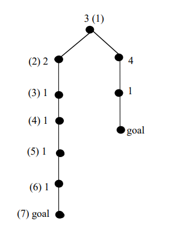

Best-First
Best-first is a kind of informed strategies that choose the next node as the one considered the most desirable. The algorithm "move" to the direction of the maximum (or minimum) of the function estimating the desirability (or cost) to reach the goal. Some special cases:
A best fit algorithm is not optimal because it will search the lowest distance and ignore depth 